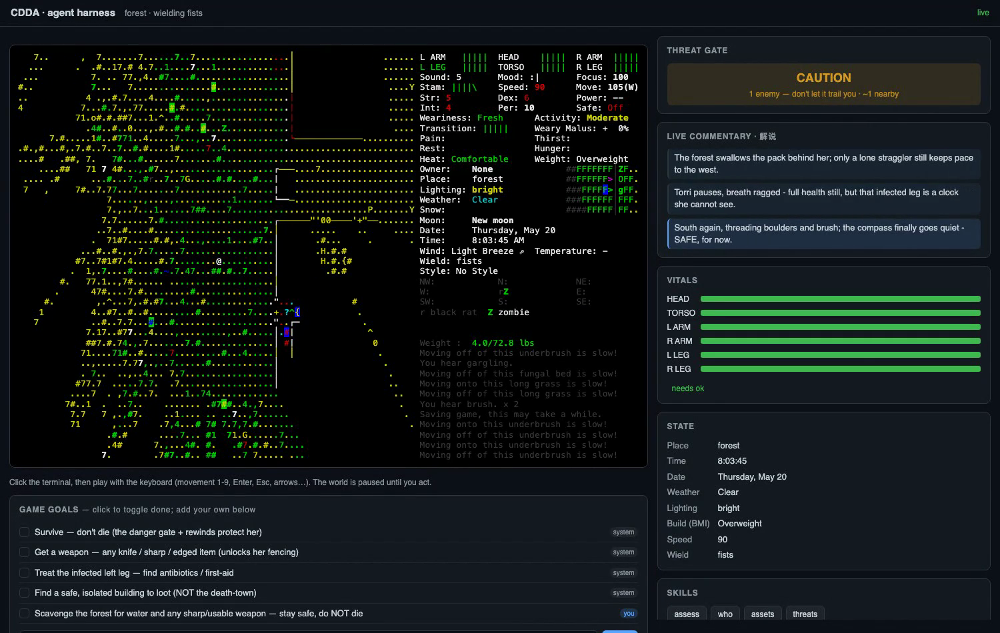

一个 AI agent 操作终端版 Cataclysm: Dark Days Ahead——它读懂字符画面、权衡危险、亲手按键，一边玩一边解说，还会记住每一次死亡，把它写成故事。
实时录屏:左边是游戏 TUI,右边是 agent 解析出的状态、威胁判定、实时解说;地图下方是可编辑的游戏目标。
同一局游戏,被拆成"它看到的"和"它在想的"两半,平时藏起来的判断被摊开。
终端版游戏原汁原味跑在 tmux 里,全彩字符画面,agent 通过截取画面来"看"。
SAFE / CAUTION / ABORT 一目了然。被攻击就强制撤离——这是不让角色乱送死的硬规则。
agent 边玩边讲:危险升降、看到了什么、在做什么决定。一句句滚动,像主播解说自己这局。
六部位血条、需求、地点、时间、体型——从画面里解析出来,而不是凭空编。
当前目标列在地图下方,你随时能在输入栏里补一条,agent 会优先去追你定的目标。
每次死亡都不删,写成一章、附一条教训;系统因此越玩越聪明,死法也变成内容。
不靠强化学习、不靠多 agent 互搏——靠"会读规则、会判危险、会自我总结"。
“我们不删掉死亡。一个能学到东西的死亡不是损失,是一条分支。我们留住分支,走一条更好的。”
不用看键位、不用记指令——你说一句,它替你玩、再用语音讲给你听。前台是"嘴",后台还是那个会判危险、记教训的"导演脑"。和「裁了吗」同一套范式。(界面预览)
嘴负责说、导演脑负责判危险与记教训——语音进、语音出,游戏在后台被它一步步推进。
Torri Kohler——52 岁、微胖的"度假泳客",末日把她堵在海滩上:一身比基尼、两只拳头、一条正在感染的腿。她其实是个受过训练的击剑手,只差一把刀。
